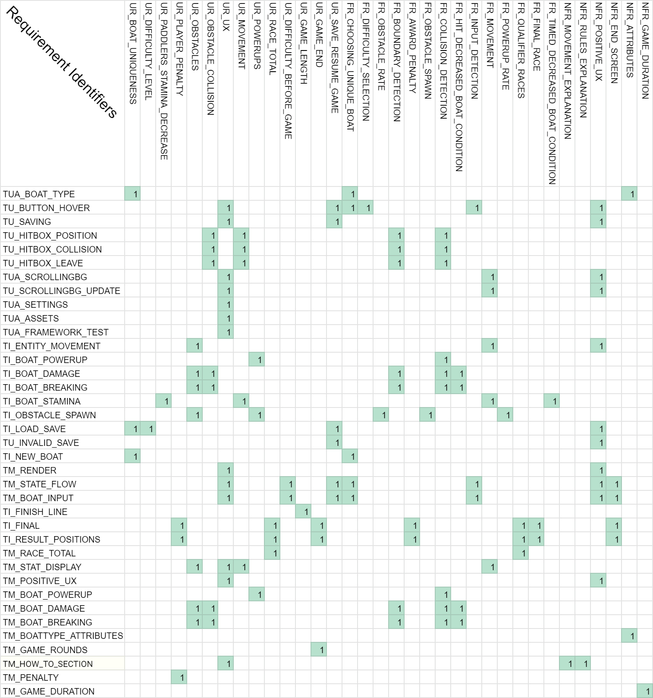

Hello World!
This is Team 12's Engineering 1 Assessment 2 project. Originally inherited from Team 15's Assessment 1
project.
It is also now where Team 12 will be storing our updated Assessment 1 files as well as new Assessment 2
content.
Team 12 Github Repository

Assessment 1 (Original Unedited Team 15 Documents)
Documentation
Requirements Specification
Architecture
Method Selection and Planning
Risk Assessment
Implementation Discussion
Code Documentation
Game Files
Sprint Updates
15/10 - 22/10

This week we were slightly delayed getting the requirements written-up however we do not expect to go past the 28/10 complete date for these tasks.
23/10 - 29/10

The requirements were completed by 29/10 which keeps us on track as planned. We have a breakdown of each task that needs to be completed and have planned accordingly. We have also discussed which methods and tools we will be using; this is yet to be written up however. Furthermore, we decided to start doing a Risk Assessment this week; sooner than anticipated in case the risks arise earlier.
30/10 - 05/11

Having gotten a diagram for the Abstract Architecture completed, we started implementing as soon as possible as it appears writing about the Architecture is going to take us longer than expected. We’ve also completed the Risk Assessment and are in good place to identify and mitigate risks should they arise.
06/11 - 12/11

We have discussed our method and tool selection and have documented our Abstract and Concrete Architecture representations - though these need to be related to the requirements yet.
13/11 - 19/11

We have completed our representation of the Concrete Architecture as the Implementation is well under way; no changes to the Architecture of the game will be changed at this point. We are yet to discuss unimplemented requirements but that should be done over the weekend.
19/11 - 25/11

Jump to:
Assessment 1 Documents (after editing by Team 12)
Requirements
Architecture
Method Selection and Planning
Risk Assessment
Implementation
- For Impl2 see Team 12 below.
For Impl1 see Team 15 unimplemented requirements above (as this was not supposed to be changed).
Assessment 2 Deliverables from Team 12
Documentation
Testing (Test2.pdf) - Otherwise for Automated and Manual Testing Click Here to Jump Below
Change Report (Change2.pdf)
Implementation 2 (Impl2.pdf)
Continuous Integration Report (CI2.pdf)
Game Executable Files
Jar File Full
Screen
Jar File
Windowed
Contains a windowed version of the game for people who cannot run full screen apps (e.g. for those using hipster linux window managers) however the full screen version is the intended experience.
Executable Releases PageJavadoc
Brief User Guide - This brief user guide is accessible through the game from the main menu.
Sprint updates for Assessment 2
11/01 - 20/01
The first week of the term was exam period, so we didn’t do anything regarding the ENG1 project.
21/01
During the first practical, our team:
- Forked Github for group takeover
- Got resources for assessment 2
- Looked over and tried to understand their code
- Made a Trello board for Assessment 2
- Emailed the module leaders in lieu of a customer meeting
- Answered emails and provide service to other groups who inherited our project
- Caught up members with practical progress and assessment 2 progress
- Made new tasks for all members
23/01 - 24/01
During this period, our team worked on implementing the missing feature from Assessment 1 (Boat Attributes) and added the features required for Assessment 1 (Difficulty, saving, and power-ups).
25/01 - 27/01
We got started on Software Testing and cloned the website.
28/01 - 02/02
Began work on documentation for Assessment 2 deliverables and editing the previous team’s documents.
03/02 - 07/02
Finishing touches on the Testing, Change Report and Implementation Documents.
For test2 see: Assessment 2
Automated Testing
Manual Testing
The animated GIFs in this manual testing document has clips that may not represent the full GUI changes of the latest version. Don't be alarmed. The first one in the TM_STATE_FLOW is more representative as it includes GUI colour & contrast changes for easier viewing experience as discussed in “Manual Playtesting” in Test2, “Background and text UI changes” in Impl2 as well as below in the manual testing document in “TM_POSITIVE_UX”. These GIFs are not representative of the quality or smoothness of the game due to format. Please play the game for the full experience.
Test Matrix
